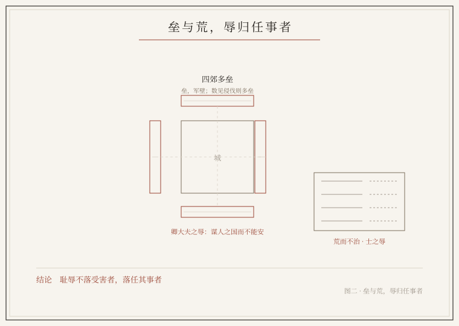

曲礼上 · 一·一百零九 · 第 107 课
四郊筑满军垒，是卿大夫的耻辱；土地广大却荒废不治，也是士的耻辱。讲的是「在其位者，任其责」。
说什么事：四郊多垒，此卿大夫之辱也。地广大，荒而不治，此亦士之辱也。
落在哪一层：礼意，兼及制。讲的是耻辱的归属。
为何编在此位：上节言私仇，此节言公责。私怒有界，公责亦有界。
【经】四郊多壘，此卿大夫之辱也。地廣大，荒而不治，此亦士之辱也。
【注】辱其謀人之國，不能安也。壘，軍壁也，數見侵伐則多壘。辱其親民不能安。荒，穢也。
四郊 疏「王城四面并有郊，近郊五十里，远郊百里；诸侯亦各有四面之郊，里数随地广狭」。
垒 注「军壁也」；「数见侵伐则多垒」。
卿大夫之辱 注「辱其谋人之国，不能安也」。疏「卿大夫尊高，任当军帅，若有威德，则无敢见侵。若尸禄素餐，则寇戎充斥」。
地 疏「地，采地也」。
士 疏「士，邑宰也」；「劝课耕稼」。
亦 疏「今谓非但大夫之辱，亦是士之辱」。一字见等差。
四郊筑起许多军垒，这是卿大夫的耻辱。土地广大而荒废不治，这也是士的耻辱。
两句话，一条原则：耻辱不落在受害者身上，落在任其事者身上。城外有垒，说明谋国者不能安其国；地荒不治，说明亲民者不能安其民。这比责备更重，因为它指向的是「你本可以」。
第一层 垒是结果，不是原因 注「数见侵伐则多垒」。垒多不是兵强，是屡被侵伐的证据。看见结果，要问其因。
第二层 谋人之国 注五字最重。受禄而谋其事，谋而不安，则辱归焉。
第三层 尸禄素餐 疏语。占着位置、吃着俸禄而不任事，是这层耻辱的另一种说法。
第四层 「亦」字之妙 大夫之辱在兵，士之辱在地。位不同，责不同，而同为「不能安」。一个「亦」字，把等差和共通都说尽了。
与今日何干 责任要落到能改的人身上。归责于无能为力者，是泄愤；归责于任其事者，才是治事。
| 左 | 右 |
|---|---|
| 四郊多垒 | 军壁林立，数见侵伐 |
| 卿大夫之辱 | 谋人之国而不能安 |
| 地广大荒而不治 | 采地废秽，民散流移 |
| 士之辱 | 为邑宰而不能亲民 |
| 「亦」 | 位不同，责同归 |
画一座城的上方俯视轮廓：城外四面各立一道短墙状的壁垒，共四道，环绕城的四郊；城的西北一侧有一大片空着的田垄，垄线断断续续、未合拢。壁垒与荒田之间以一道细虚线连到城心一点。不画人、不写文字。赭色只用在四道壁垒的顶端。
